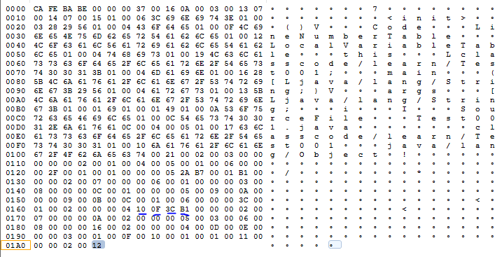
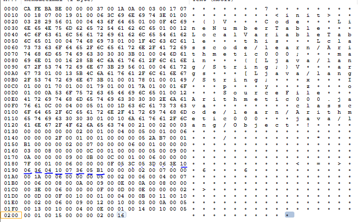

JVM指令集
- 单字节指令
- 总计197条指令
- []代表参数位数
指令列表：加载存储
| 1 | 2 | 3 | 4 | 5 |
|---|---|---|---|---|
| iload [8] | lload [8] | fload [8] | dload [8] | aload [8] |
| iload_0 | lload_0 | fload_0 | dload_0 | aload_0 |
| iload_1 | lload_1 | fload_1 | dload_1 | aload_1 |
| iload_2 | lload_2 | fload_2 | dload_2 | aload_2 |
| iload_3 | lload_3 | fload_3 | dload_3 | aload_3 |
| iconst_m1 | iconst_0 | iconst_1 | iconst_2 | iconst_3 |
| iconst_4 | iconst_5 | lconst_0 | lconst_1 | |
| fconst_0 | fconst_1 | fconst_2 | ||
| dconst_0 | dconst_1 | aconst_null | ||
| bipush [8] | sipush [16] | |||
| ldc [8] | ldc_w [16] | ldc2_w [16] | ||
| istore [8] | lstore [8] | fstore [8] | dstore [8] | astore [8] |
| istore_0 | lstore_0 | fstore_0 | dstore_0 | astore_0 |
| istore_1 | lstore_1 | fstore_1 | dstore_1 | astore_1 |
| istore_2 | lstore_2 | fstore_2 | dstore_2 | astore_2 |
| istore_3 | lstore_3 | fstore_3 | dstore_3 | astore_3 |
指令列表：算术
| 1 | 2 | 3 | 4 | 5 |
|---|---|---|---|---|
| iadd | ladd | fadd | dadd | |
| isub | lsub | fsub | dsub | |
| imul | lmul | fmul | dmul | |
| idiv | ldiv | fdiv | ddiv | |
| irem | lrem | frem | drem | |
| ineg | lneg | fneg | dneg | |
| iinc | ||||
| ishl | ishr | iand | ior | ixor |
| lshl | lshr | land | lor | lxor |
| iushr | lushr | |||
| dcmpg | dcmpl | fcmpg | lcmp |
指令列表：类型转化
| 1 | 2 | 3 | 4 | 5 |
|---|---|---|---|---|
| i2l | i2f | i2d | ||
| l2f | l2d | f2d | ||
| i2b | i2c | i2s | ||
| d2i | d2f | d2l | ||
| f2i | f2l | l2i | ||
指令列表：对象操作
| 1 | 2 | 3 | 4 | 5 |
|---|---|---|---|---|
| new [] | newarray | anewarray | multianewarray | |
| getstatic | putstatic | getfield | putfield | |
| baload | caload | saload | iaload | laload |
| faload | daload | aaload | ||
| bastore | castore | sastore | iastore | lastore |
| fastore | dastore | aastore | ||
| arraylength | instanceof | checkcast |
指令列表：方法调用返回
| 1 | 2 | 3 | 4 | 5 |
|---|---|---|---|---|
| invokevirtual | invokeinterface | invokespecial | invokestatic | invokedynamic |
| ireturn | lreturn | freturn | dreturn | areturn |
| return |
指令列表：操作栈管理
| 1 | 2 | 3 | 4 | 5 |
|---|---|---|---|---|
| pop | pop2 | |||
| dup | dup2 | |||
| dup_x1 | dup_x2 | dup2_x1 | dup2_x2 | |
| swap | ||||
| nop |
指令列表：程序跳转
| 1 | 2 | 3 | 4 | 5 |
|---|---|---|---|---|
| ifeq [16] | ifne [16] | iflt [16] | ifle [16] | ifgt [16] |
| ifge [16] | ifnull [16] | ifnonnull [16] | ||
| if_icmpeq [16] | if_icmpne [16] | if_icmplt [16] | if_icmple [16] | if_icmpgt [16] |
| if_icmpge [16] | if_acmpeq [16] | if_acmpne [16] | ||
| tableswitch | lookupswitch | |||
| goto | goto_w | |||
指令列表：异常&同步
| 1 | 2 | 3 | 4 | 5 |
|---|---|---|---|---|
| athrow | monitorenter | monitorexit |
指令实例：算术

10代表bipush，数值6占用一个字节；
36代表istore,数值4占用一个字节；B1代表return。问题是，字节码怎么知道哪些是
指令哪些是数值？进一步分析，在代码前面有着固定的序列:00 01 00 xx 00 00 00 xx;
在代码后面有着固定的序列00 00 00 xx 00 xx 00 00 00。由此可以定位代码段在字节码文件
中的位置。